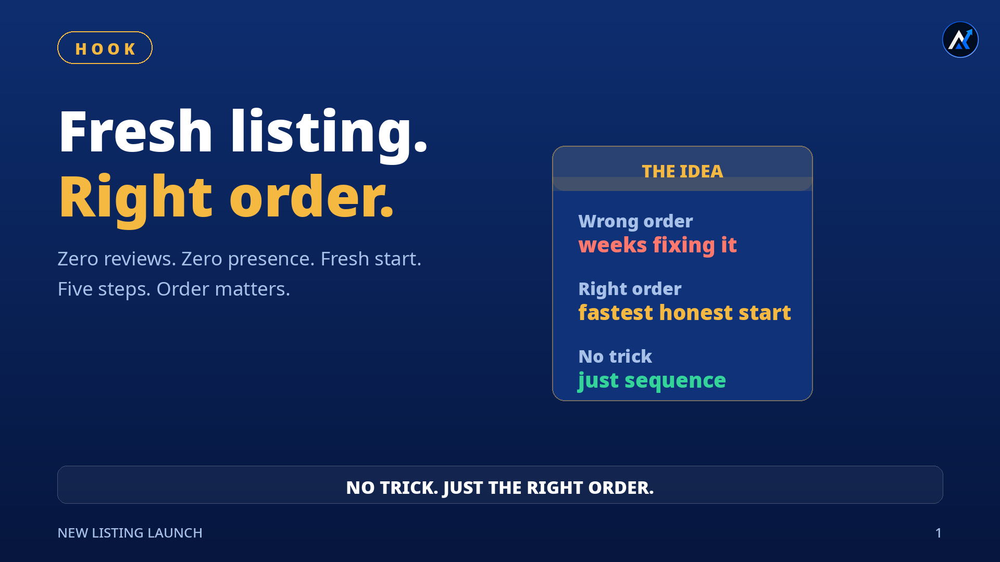
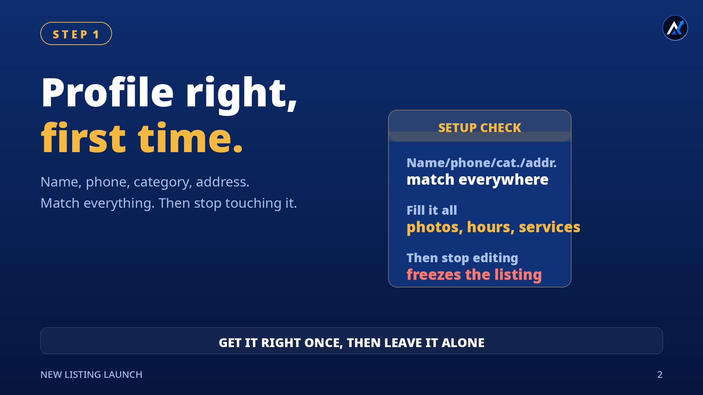
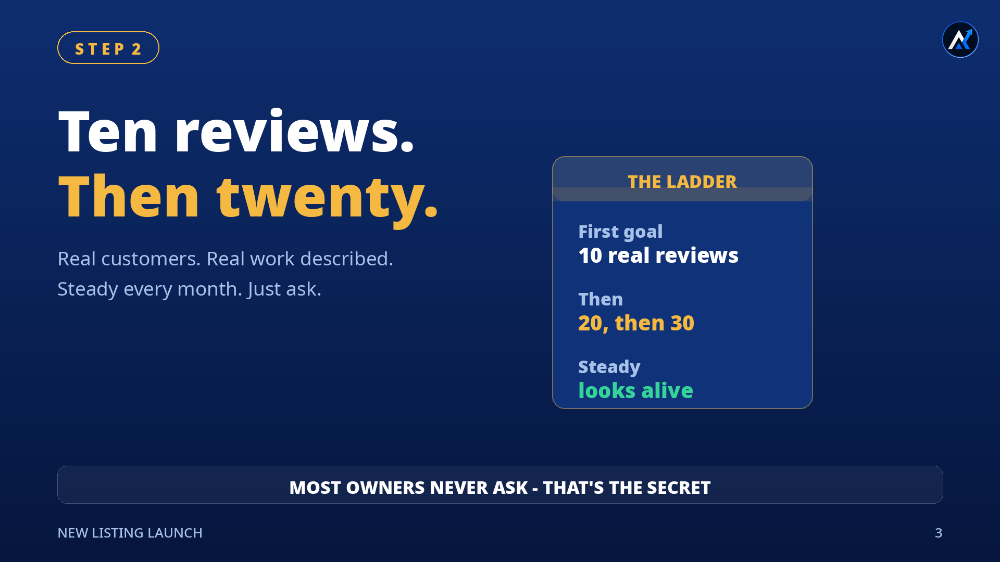
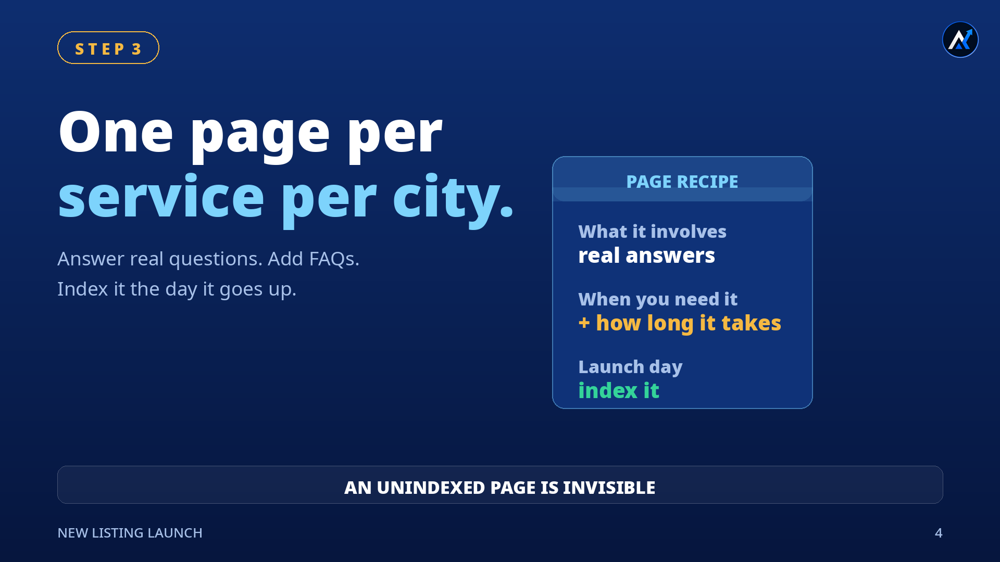
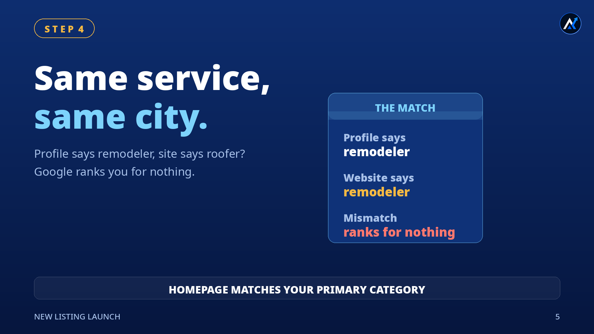
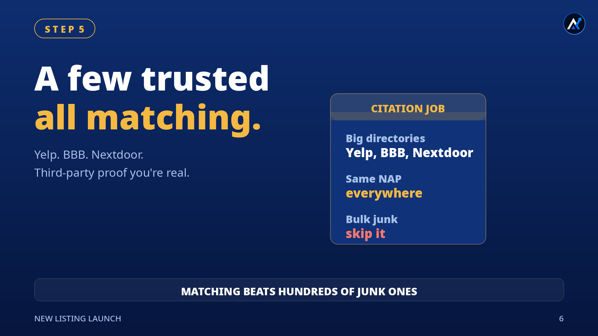
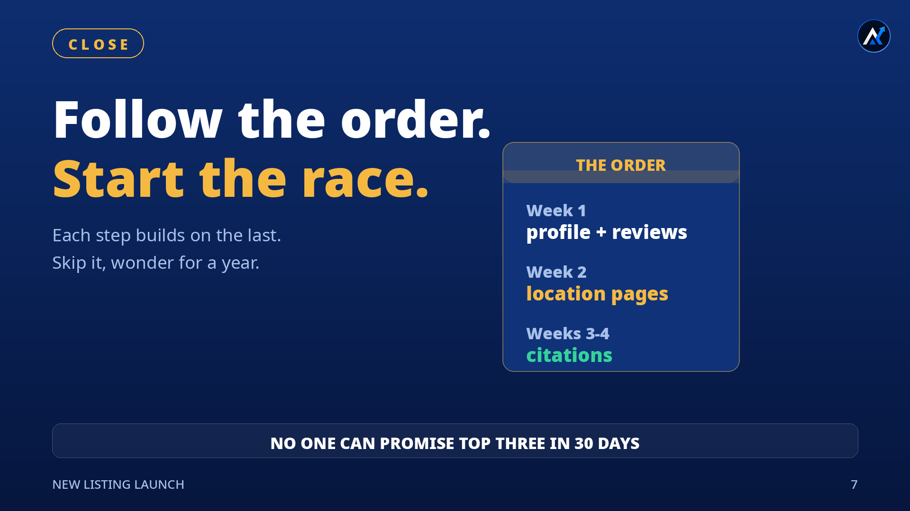

Hand me a brand-new business tomorrow — fresh Google listing, no reviews, no history — and I wouldn't start with tricks. I'd start with order. These are the five steps, in the sequence I'd actually do them, and the honest reasoning behind each one.
1Why order matters

Most local SEO advice is a pile of tactics with no sequence. Profile, reviews, website, citations — everyone lists the same ingredients, nobody tells you which pan goes on the heat first. So business owners do them in whatever order feels urgent, and then wonder why nothing compounds.
The order here isn't a secret. It's just dependency logic: reviews need a finished profile behind them, location pages need to know which service you're targeting, and citations need everything to already match. Do step three before step one and you're building on sand — you'll redo it later. That's the "stuck for a year" nobody warns you about: not a penalty, just months of rework.
2Step 1: Set up the profile right the first time

Your name, phone number, category, and address have to be identical everywhere Google can see: your website, your business registration paperwork, every directory you touch. Not "close enough" — identical. Google cross-checks these sources against each other, and when it finds three different versions of your business, it trusts none of them. Practitioners call this NAP consistency, and it's the foundation everything else stands on.
Then fill out the rest like you mean it: every service with a real description, full hours, photos of the actual work, a complete business description. A half-empty profile tells Google — and customers — that the business might not be serious.
And here's the part people learn the hard way: once the name and address are set, stop editing them. Changing core business info is one of the known triggers for re-verification — Google can freeze the listing while it re-checks that you're real, which costs you weeks of visibility. It won't happen every time, but it's a real risk, and it's completely avoidable. Get it right once, then leave it alone.
3Step 2: Get reviews, fast

The first goal is ten — ten real reviews from ten real customers. Not friends, not family, not anyone who didn't pay for the work. That matters twice: Google's policy requires reviews to reflect genuine customer experiences, and fake engagement can now get a profile restricted. But it also matters for conversion. When a customer writes "fixed my panel upgrade in two hours," those exact words sit on your profile where Google and your next customer both read them.
Then keep the ladder going: ten, then twenty, then thirty — and keep them arriving steadily, month after month. A profile gaining reviews every month looks alive. One stuck at the same number for a year looks abandoned. And keep the pace human: sudden bursts of dozens of reviews can trip spam filters, while a steady drip never does.
How do you actually get them? You ask. Make a list of past customers, send a short personal email or just call, and include your direct review link. Reply to every review that comes in — the next customer reads your replies before they ever call. Most business owners never ask at all. That's the whole secret.
4Step 3: Build your location pages

Around week two, build one page for every service in every city you serve. This is the service-times-location grid: "panel upgrades in Chicago" is a different page from "panel upgrades in Evanston," because people search that way.
Each page should answer the questions a customer actually has: what does this job involve, when do you need it, how long does it take, what does it cost to get wrong. Add FAQs. Mention the area naturally — it helps Google place the page, and it helps the reader feel you're local. Thin pages with the city name swapped in don't work; pages that genuinely answer questions do.
Then the step everyone skips: index it. A page Google hasn't crawled and indexed is invisible no matter how good it is — being live on your site is not the same as being in Google's index. Submit it in Search Console the day it goes up, and check that it's actually indexed before you move on.
5Step 4: Make your website and profile say the same thing

This is the quiet killer. The profile says "remodeler" but the website's homepage talks about roofing. Or the profile targets one city while the site targets another. Google looks at both, can't tell what the business is actually best at — and ranks it for nothing.
The fix is simple: pick your main service and your main area, and say it the same way in both places. Your homepage represents your whole business, so it should clearly match your primary Google category. Service pages then go one level deeper with their specific proof. One identity, everywhere.
6Step 5: Get your citations right

Citations are third-party confirmations that your business is real: your name, address, and phone listed on trusted directories, matching your Google profile exactly. Yelp, the Better Business Bureau, Nextdoor — the established names Google already trusts.
That's the entire job of a citation, which is why you don't need hundreds of them. A handful of trusted directories with identical information beats a pile of obscure ones every time. Bulk-submitting to hundreds of low-quality directories is a leftover tactic from a decade ago — it doesn't move the needle, and inconsistent data across junk sites can do more harm than good. Match the big ones. Skip the rest.
7The order, week by week

| WEEK | DO THIS | WHY NOW |
|---|---|---|
| Week 1 | Profile setup + first reviews | Reviews need a finished profile behind them |
| Week 2 | Location pages, indexed | Pages need to know which service you're targeting |
| Weeks 3–4 | Core citations | Directories need everything to already match |
Now the honest close. Will this put a new listing in the top three within thirty days? I can't promise that — and anyone who guarantees rankings is selling you something. What I can tell you is the other side of it: skip the order, and you'll spend a year wondering why nothing moves. Follow it, and your new listing starts the race instead of watching it.
No tricks.No guarantees.Just the right order.
Sources
Every research claim in this video comes from a named source:
- Search Engine Journal — Google's local ranking factors — local results are based primarily on relevance, distance, and prominence; more reviews and positive ratings can improve local ranking.
- Ciphers Digital — avoiding GBP re-verification — edits to business name, address, phone, or category can trigger re-verification; make major changes deliberately, one at a time.
- Sterling Sky — Google review policy violations — Google's policy requires reviews to reflect genuine customer experiences; fake, incentivized, or manipulated reviews violate policy.
- The Daily Star — Google Maps restricting profiles for fake reviews — businesses caught manipulating reviews face penalties including review removal, blocked ratings, and public warnings under the Fake Engagement policy.
A note on what's real
This is the launch order I'd follow for any brand-new listing — a practitioner framework, not a story about one client. What's hype-free here by design: no ranking-time guarantees, no bulk-citation magic, no review tricks. Webinar attendees aren't customers, so asking them for reviews would break Google's genuine-experience policy — that idea didn't make the cut. And a handful of matching trusted citations does the real work, so the "list it on 500 directories" advice didn't either.